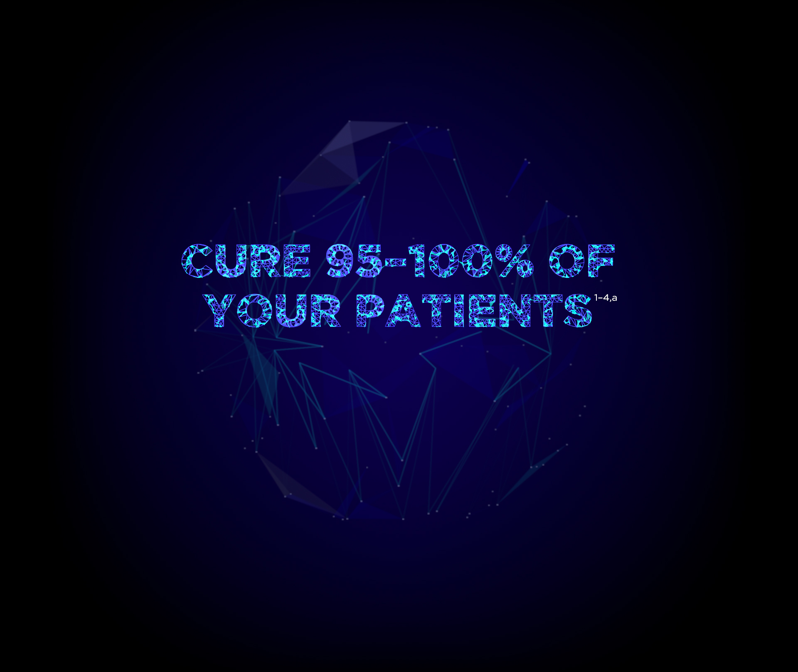
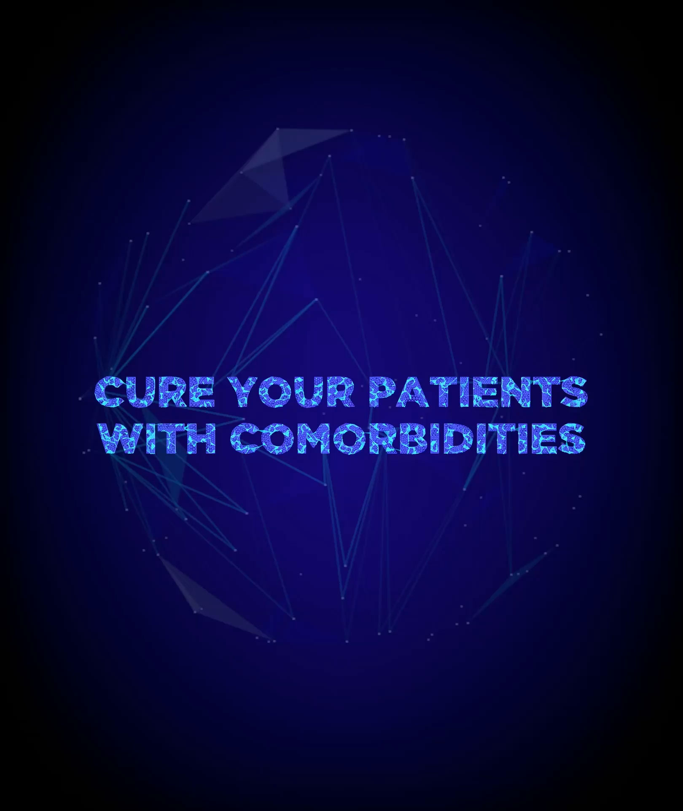
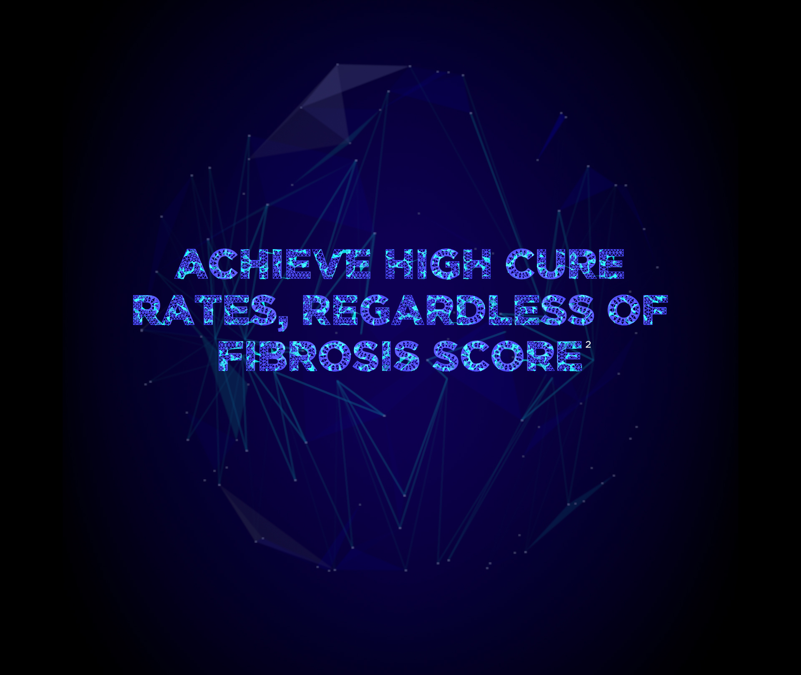
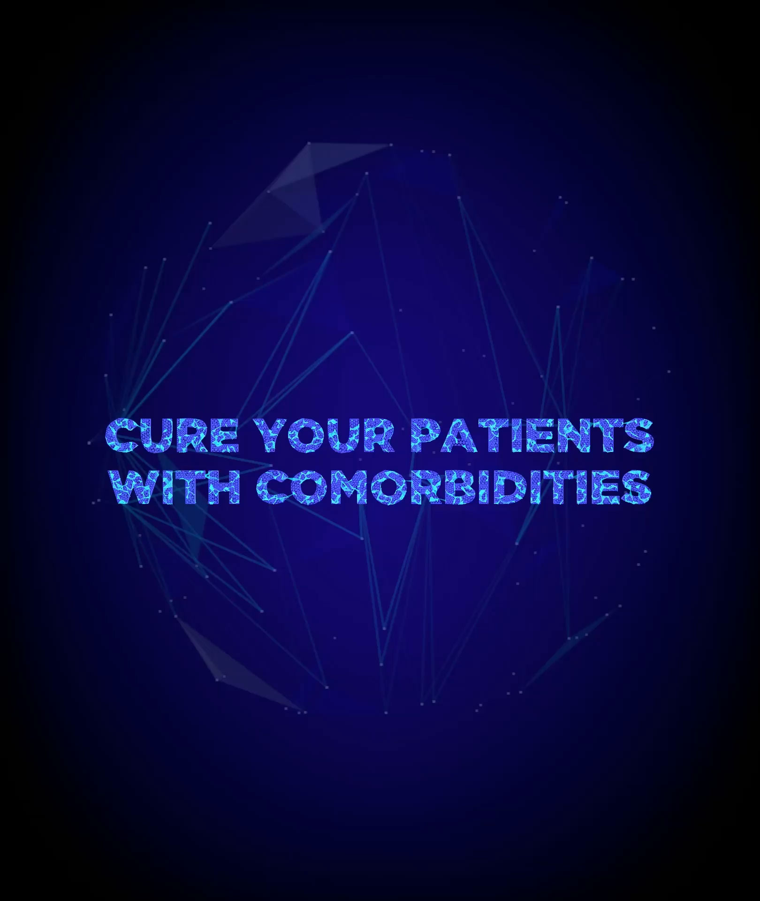
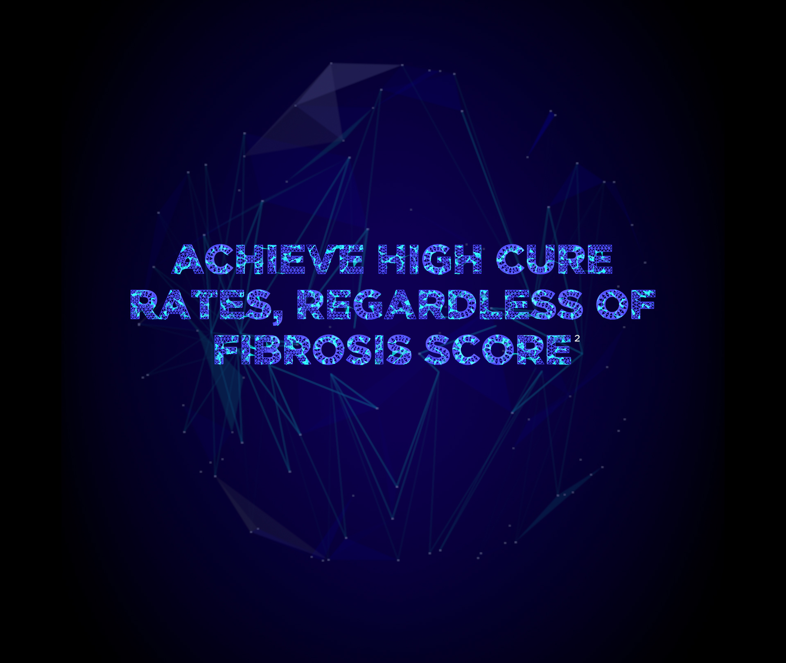
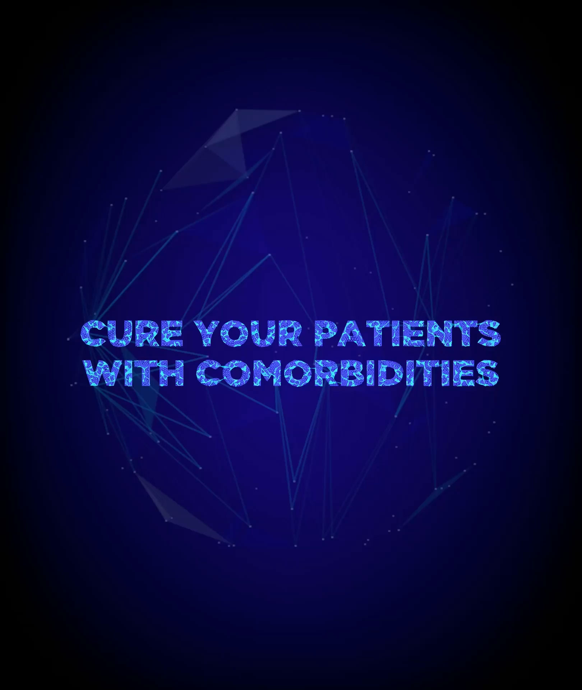
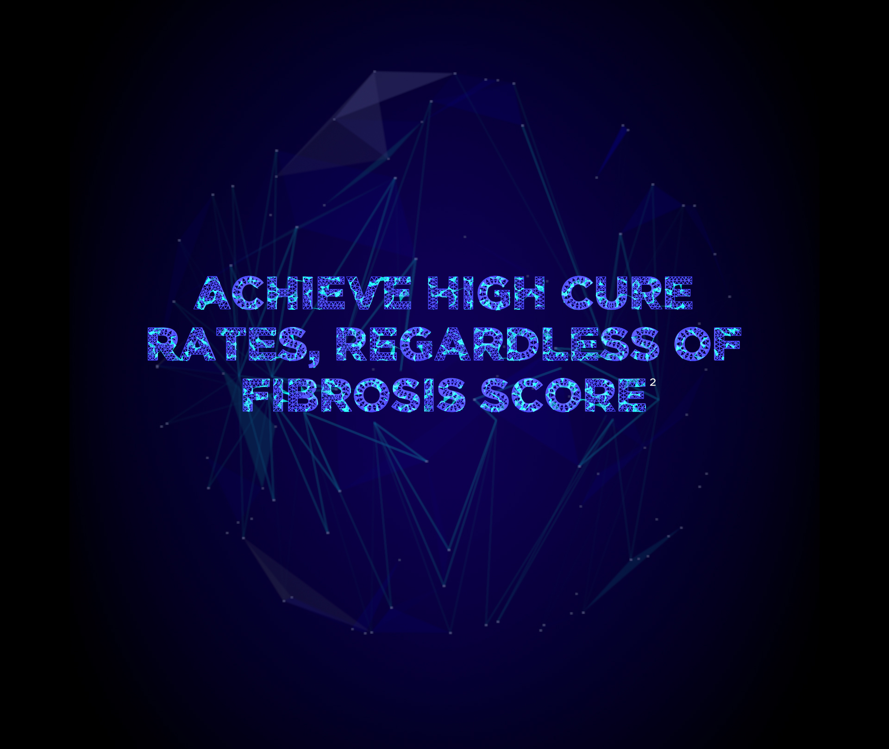

 





From clinical trials to clinical practice:
bring real-world data to life
- “I’m cured! I couldn’t believe it when I got the results. My liver is still pretty healthy, so now the future looks bright for me and the children”
- “My treatment was quite simple – just one pill each morning while the children had their breakfast.”
- “My treatment was quite simple – just one pill each morning while the children had their breakfast.”
-
Up to 100% cure in real-world
HCV GT1 treatment-naïve patients
without cirrhosis treated with 8-week
HARVONI (n=543)1–4,a,b

-
HARVONI offers a single-tablet
regimen for the majority of HCV GT1
patients.5,c 96% treatment adherence
was observed in real-world patients
treated with 8-week HARVONI3,d
-
Up to 100% completion rates were
seen in real-world patients treated
with 8-week HARVONI1–4
- “There’s a lot of stigma around having HCV, especially being coinfected. But now I’m cured, I don’t have to worry about it.”
- “I didn’t even have to change my HIV medication – that was such a relief.”
- “My job is important and I can’t afford to take time off. With this treatment, I didn’t have to.”
-
Up to 100% cure in eligible real-world HIV/HCV-coinfected patients treated with HARVONI for 8 weeks1–4,a,b
-
HARVONI can be coadministered with all classes of HIV antiviral agents2,c
was observed in real-world patients
treated with 8-week HARVONI3,d
-
HARVONI is well tolerated up to 100% of real-world patients completed 8-week therapy with HARVONI1,3,4,d